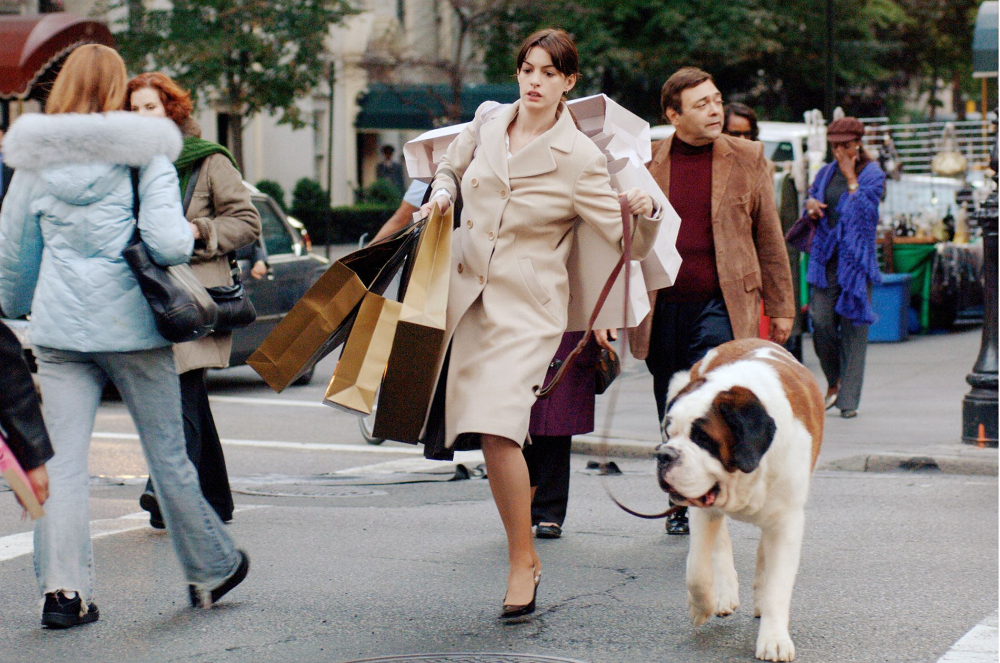
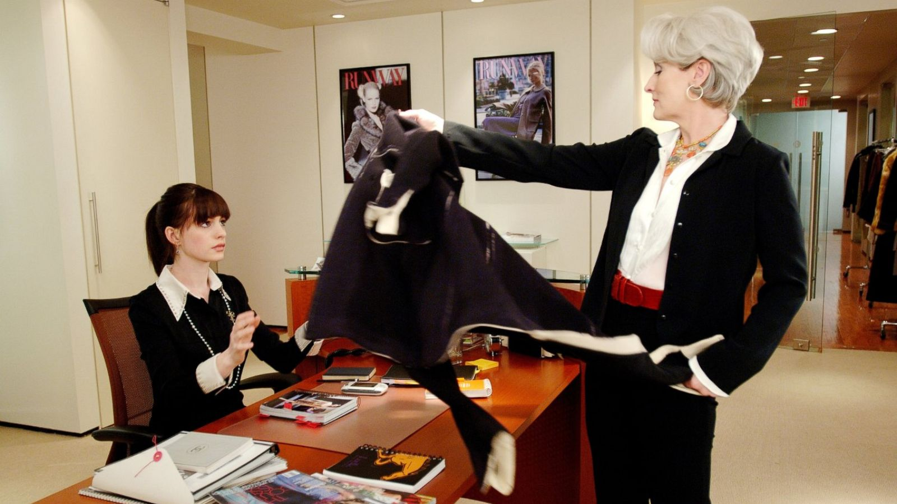

The Devil Wears Prada
במאי: דיוויד פרנקל
ז'אנר: קומדיה, דרמה
דעתי:
"סרט שכבר הפך לקלאסיקה. על החיים הקשים בתעשיית האופנה.
השחקנים מופיעים ברמה הגבוהה ביותר. והכל פשוט זועק: S-T-Y-L-E"
The Devil Wears Prada הוא סרט דרמה קומדיה אמריקאי משנת 2006 בבימויו של דייוויד פרנקל ובה פקה של וונדי פינרמן. התסריט, שנכתב על ידי אלין ברוש מק'קנה, מבוסס על הרומן מ-2003 מאת לורן ויסברגר. בסרט מככבים מריל סט ריפ, אן האת'ווי, אמילי בלאנט וסטנלי טוצ'י.
למרות שהסרט מתרחש בעולם האופנה, ומתייחס למפעלים ידועים ואנשים בתעשייה זו, רוב המעצבים ואנשי האופנה האחרים נמנעו מלהופיע כעצמם מחשש לא לצער את עורכת ווג בארה"ב, אנה ווינטור, שסבורים כי היו ההשראה עבור Priestly. ובכל זאת, רבים אפשרו להשתמש ב בגדים ובאביזרים שלהם בסרט, מה שהפך אותו לאחד הסרטים המתלבושים היקרים ביותר בהיסטוריה. מאוחר יותר התגברה ווינטור על הספקנות ה ראשונית שלה, ואמרה שהיא אוהבת את הסרט ואת סטריפ במיוחד.
עלילה
אנדי (אן האת'ווי) הוא בוגר לאחרונה מכללה עם חלומות גדולים. כשהגיעה לעבודה במגזין Runway היוקרתי, היא מוצאת את עצ מה העוזרת של העורכת השטנית מירנדה פריסטלי (מריל סטריפ). אנדי מטיל ספק ביכולתה לשרוד את הסיור העגום שלה בתור הילדה המצליפה של מירנדה מבלי להיחרך.
סצנות מהסרט - ספוילרים!
-

- 
- 